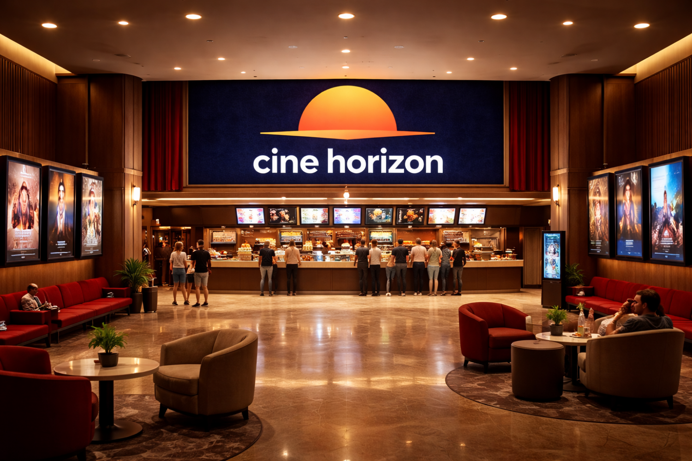
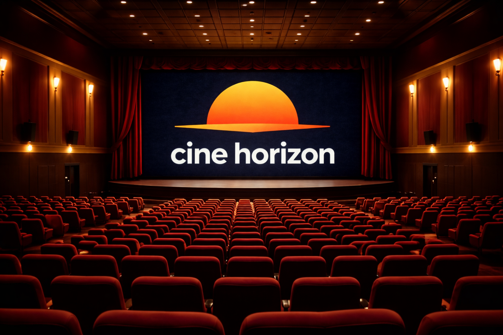
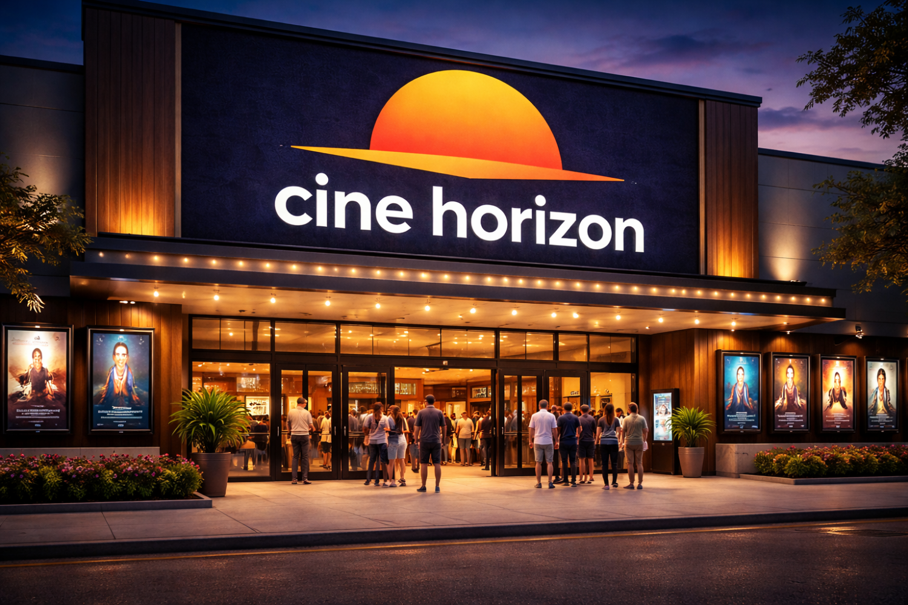

|
| Benvinguts al lloc web de Cine Horizon
En aquest cine, podeu veures les últimes pel·lícules en formats Atmos i 3D. Al acabar la pel·li, podràs passar per la botiga a comprar coses relacionades amb la pel·licula (pòsters, figuretes, etc.)
Qui som?
Cine Horizon és una nova franquícia de cinemes creada amb l’objectiu de transformar la manera tradicional de viure el cinema i convertir cada pel·lícula en una experiència única i immersiva. El projecte combina entreteniment, innovació tecnològica i confort per oferir als espectadors una nova forma de connectar amb les històries de la gran pantalla.
A diferència dels cinemes convencionals, Cine Horizon compta tant amb sales estàndard d’alta qualitat com amb innovadores sales immersives equipades amb tecnologia IoT (Internet of Things). Aquestes sales intel·ligents sincronitzen efectes de llum, temperatura, vibració i so envoltant amb les escenes de la pel·lícula, aconseguint que el públic se senti part de l’acció i visqui una experiència molt més realista i emocionant.
La innovació també es reflecteix en l’ús de Big Data i anàlisi de dades avançada, que permeten estudiar les preferències dels espectadors, les pel·lícules més populars i el rendiment de les projeccions. Gràcies a això, es poden optimitzar els horaris, la distribució de sales i la programació dels continguts per adaptar-los millor als interessos del públic.
A més de l’experiència cinematogràfica, Cine Horizon aposta per crear una comunitat d’espectadors fidelitzats mitjançant avantatges exclusius, descomptes, promocions i accés anticipat a estrenes i esdeveniments. També disposa d’una botiga oficial amb productes relacionats amb les pel·lícules més populars, com figures, pòsters, roba temàtica i altres articles promocionals.
Les instal·lacions estan dissenyades amb un estil modern, elegant i confortable, pensant sempre en la comoditat i el benestar dels clients. A Cine Horizon, el cinema no és només veure una pel·lícula, sinó sentir-la, viure-la i recordar-la.


